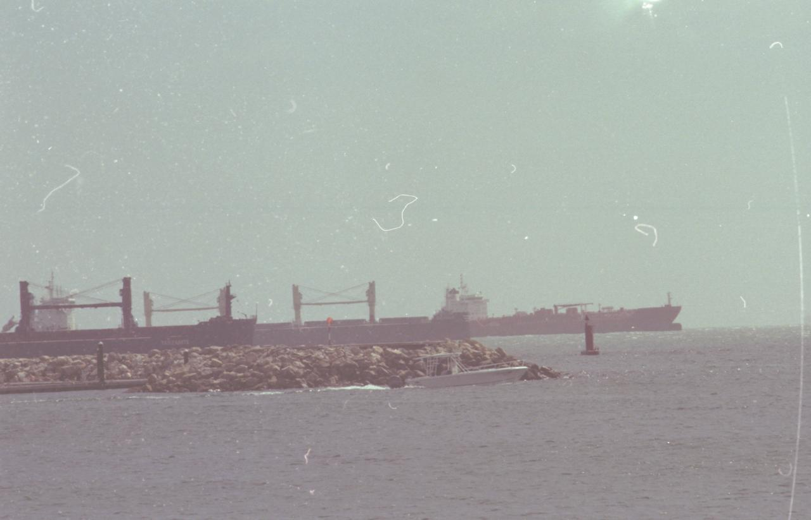
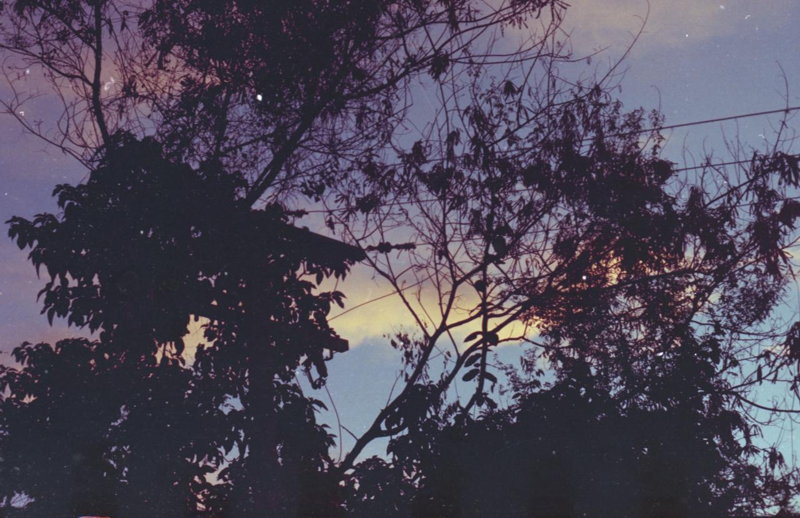
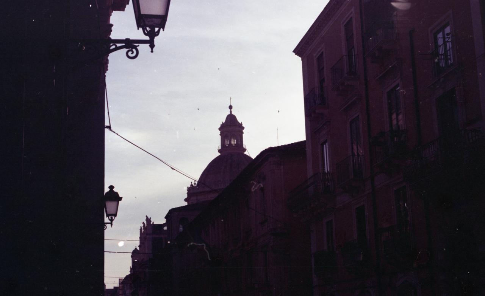
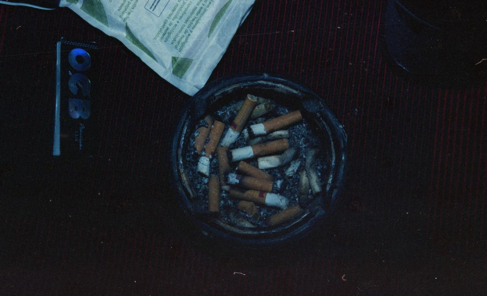

Nuestras fotos se volverán cenizas.




Nuestras fotos se volverán cenizas.
En tu mirada y la mía se construye un futuro interminable que ramifica la hermosura de aquella semilla que sembramos, que cuidamos, que regamos, todo nuestro esfuerzo y todas esas lágrimas de ojos aguados y tristes que nos causamos. Tal vez nunca pude tener a alguien como tú por ser como fui en esos momentos, y el saber que ahorita sí te podría tener y el no tenerte se siente como una cruel comedia escrita por algún infeliz que nos mira desde arriba y se burla de nosotros.
Aquí en tu ausencia, mi locura es una sola, sin barreras de contención ni fronteras que frenen mi frenesí; estoy como un adicto sin su dosis, un ludópata sin casino, un alcohólico sin un trago y así estoy yo sin ti. Te amé y te quise y ya no existe. Si pudieras leer esto, ¿me entenderías? ¿Me juzgarías? ¿Me acusarías de haber perdido la cabeza y de haber abandonado lo que fui?
Ya sé que no volverás y por ello borraré todo tu ser de adentro de mí; no miraré atrás por más que no pueda evitar amarte desesperadamente. El entender que ya no tengo control del amor o tal vez entendí que jamás estuvo en mi control.
Hoy quemaré nuestros recuerdos y cualquier posibilidad de volver a ti o a aquella confusa idea del estar contigo; voy a quemarte de mi mente.
Otra vez me mentí,
nunca fui capaz de borrar tus recuerdos
o quemar nuestras fotos.
Soy un cobarde, como me dijiste aquella noche:
“un patético cobarde,
incapaz de abrirse al sentir,
incapaz de bajar las armaduras que me aíslan de todos,
y por ello vivirás solo, incapaz de sentir,
y eres un cobarde por no poderme amar a mí”.